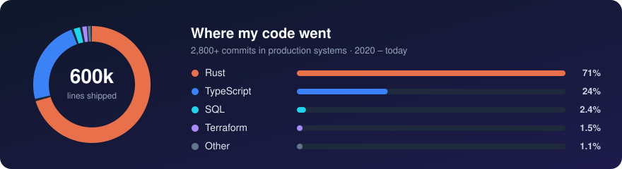

Hi, I'm Antonio Matioli 👋
Principal Software Engineer at TerraMagna, building the credit platform behind agricultural lending in Brazil…

Principal Software Engineer at TerraMagna, building the credit platform behind agricultural lending in Brazil…
